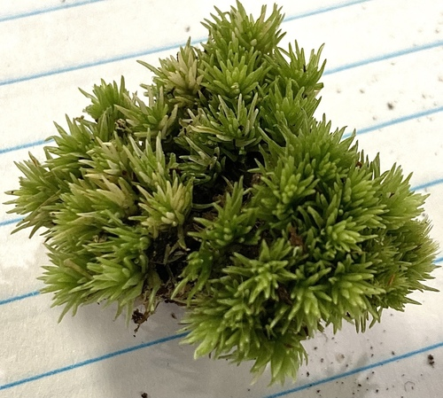

Leucobryaceae
Pincushion Moss / White Moss Family
Leucobryaceae is a distinctive family of acrocarpous mosses (producing sporophytes at the stem tips) easily recognized by their tendency to form dense, rounded cushions or tufts that appear whitish-green or grayish-white. This unique coloration results from a specialized leaf structure adapted for water absorption and retention. They are found worldwide, particularly in temperate and tropical forests, often on acidic soil, humus, rotting wood, or rock.
Overview
The Leucobryaceae family belongs to the order Dicranales and is relatively small, containing only a few genera (around 8-10, depending on classification) but includes the large and widespread genus Leucobryum, which dominates the family with over 100 species. Other genera include Octoblepharum, Schistomitrium, and Campylopus subg. Thysanomitrion (sometimes treated within Leucobryaceae).
The most striking feature of the family is the unique leaf anatomy. The leaves are typically thick and fleshy-looking, composed mostly of large, clear, empty, dead cells called hyalocysts (or leucocysts), which are arranged in one or more layers surrounding a central network of small, green, living photosynthetic cells called chlorocysts. This structure allows the plants to rapidly absorb and store large amounts of water, contributing to their whitish appearance when dry and their ability to thrive in periodically dry conditions.
Ecologically, Leucobryaceae are important components of forest floor and epiphytic communities, particularly on acidic substrates. Their dense cushions provide habitat for invertebrates and can influence local hydrology and nutrient cycling. Some species, like Leucobryum glaucum, are occasionally used in horticulture or floristry.
Quick Facts
- Scientific Name: Leucobryaceae
- Common Name: Pincushion Moss Family, White Moss Family
- Number of Genera: Approximately 8-10
- Number of Species: Approximately 150+ (mostly Leucobryum)
- Distribution: Widespread globally, especially temperate and tropical regions.
- Evolutionary Group: Bryophytes - Mosses - Dicranales
Key Characteristics (Moss Morphology)
Gametophyte: Growth Form and Habit
Plants are acrocarpous, typically forming dense, compact, rounded cushions or hemispherical tufts. Individual stems are erect or ascending, usually forked (dichotomously branched). The overall appearance is characteristically pale, whitish-green, grayish-green, or bluish-green, especially when dry.
Gametophyte: Stems
Stems often have a differentiated outer layer (hyalodermis) of large, clear cells, similar to those in the leaves. A central strand may be present or absent.
Gametophyte: Leaves
Leaves are crowded, typically erect to spreading, often lanceolate to ovate-lanceolate, and appear thick and somewhat fleshy. The most distinctive feature is their multi-layered structure (seen in cross-section): composed primarily of large, empty, porous hyaline cells (leucocysts) that surround a network or layer(s) of smaller, chlorophyll-containing cells (chlorocysts). The costa is very broad, often occupying most of the leaf base and width, and is structurally integrated with the specialized cell layers, making it indistinct from the lamina in surface view. Leaf margins are typically narrow and composed of linear cells, often incurved.
Sporophyte: Seta, Capsule, and Peristome
Sexual condition is usually dioicous. The seta is elongated and smooth. The capsule is exserted, typically inclined to horizontal, often asymmetrical and curved (arcuate), and frequently ribbed or furrowed when dry. A swollen knob at the base of the capsule (struma) is present in many species (e.g., Leucobryum). The operculum is long-rostrate (long-beaked). The peristome is single (haplolepidous), consisting of 16 teeth that are typically deeply divided into two forks (dicranoid type), often papillose or vertically striate below.
Field Identification (Mosses)
Identifying Leucobryaceae in the field is often straightforward due to their unique appearance:
Primary Identification Features (Field/Hand Lens)
- Growth form: Dense, rounded cushions or tufts (acrocarpous).
- Color: Distinctive whitish-green, grayish, or bluish-green appearance, especially when dry.
- Leaf texture/appearance: Leaves look thick, fleshy, and opaque compared to most other mosses.
- Habitat: Often found on acidic soil, humus, decaying logs, or sandstone rocks in forests.
Secondary Identification Features (Microscope often needed)
- Leaf cross-section: Confirms the unique structure with large leucocysts surrounding smaller chlorocysts. (This is definitive).
- Capsule features: Inclined, curved, often strumose (swollen base) capsules (if present).
- Peristome teeth: 16 teeth, deeply forked (dicranoid).
Common Confusion Points (Other Mosses)
- Sphagnum (Peat Mosses): Also form cushions and have pale colors with specialized leaf cells (hyaline and chlorophyllose cells), but Sphagnum has a unique structure with clusters of branches (fascicles) and explosive capsules on pseudopodia (not setae). Leaf cells have pores. Belongs to a different class (Sphagnopsida).
- Dicranum and related Dicranaceae: Some form tufts and have similar capsules/peristomes (Dicranales order), but leaves are typically single-layered (unistratose) or have a much narrower costa and lack the massive leucocyst structure; usually appear greener.
- Polytrichum/Polytrichastrum (Haircap Mosses): Form tufts but are typically dark green, wiry, have leaves with vertical lamellae on the upper surface, and distinctive angular capsules with an epiphragm covering the mouth.
- Pale forms of other cushion mosses: Some other acrocarps (e.g., certain Pottiaceae, Grimmia) can appear pale when dry but lack the characteristic thick leaves and internal leaf structure of Leucobryaceae.
Field Guide Quick Reference (Mosses)
Look For:
- Dense, whitish-green cushions/tufts
- Acrocarpous habit (sporophytes at tips)
- Thick, opaque-looking leaves
- Habitat on acidic soil, wood, rock
- Inclined, curved, strumose capsules (if present)
Key Variations:
- Cushion size and density
- Substrate (soil, wood, rock)
- Precise leaf shape (lanceolate vs. ovate)
- Capsule presence/absence (often sporophytically shy)
Notable Genera
The family is dominated by Leucobryum, but includes other distinct genera:

Leucobryum
Pincushion Moss / White Moss (Genus)
The largest and most characteristic genus. Forms large, dense, pale cushions. Leaves lanceolate, appearing very thick due to multiple layers of leucocysts around a central chlorocyst layer. Capsules curved, inclined, strumose. L. glaucum is common in eastern North America and Europe.

Octoblepharum
(Genus)
Typically found in tropical and subtropical regions, often epiphytic or on decaying wood. Plants form smaller tufts or grow intermixed. Leaves are strap-shaped or lingulate (tongue-shaped), blunt or rounded at the apex, also with leucocysts/chlorocysts. Capsules erect; peristome has only 8 (not 16) teeth.

Campylopus subg. Thysanomitrion
(Subgenus, sometimes included)
Some species of Campylopus (Dicranaceae family) with specialized leaf structures (hyalocysts) are sometimes placed within or near Leucobryaceae. They often have hair points on the leaves (unlike typical Leucobryum). Illustrates taxonomic debate. (Image shows a typical Campylopus for context).

Schistomitrium
(Genus)
A less common tropical genus, often epiphytic. Distinguished by specific details of leaf structure and often by having mitrate (conical, unslit) calyptrae covering the capsule.
Phylogeny and Classification
Leucobryaceae belongs to the order Dicranales, class Bryopsida. This order is characterized by acrocarpous growth and typically haplolepidous peristomes (derived from a single series of initial cells), often with 16 teeth that are frequently forked (dicranoid).
The family's position within Dicranales is well-supported by molecular data, often grouping with families like Calymperaceae and Dicranaceae. The unique leaf anatomy, with its complex layering of leucocysts and chlorocysts, is a major evolutionary innovation defining the family (or at least its core members like Leucobryum and Octoblepharum) and is likely an adaptation for efficient water management, allowing colonization of habitats with fluctuating moisture levels.
Position in Plant Phylogeny
- Kingdom: Plantae
- Division: Bryophyta (Mosses)
- Class: Bryopsida
- Order: Dicranales
- Family: Leucobryaceae
Evolutionary Significance
The Leucobryaceae family is notable for:
- Unique Leaf Anatomy: The evolution of the multi-layered leaf with leucocysts and chlorocysts is a remarkable adaptation for water storage and photosynthesis in variable environments, analogous but structurally different to Sphagnum.
- Acrocarpous Cushion Form: Represents a successful life strategy among acrocarpous mosses, allowing water retention and dominance in certain microhabitats.
- Relationship within Dicranales: Provides insights into the diversification of haplolepidous mosses and the evolution of specialized anatomical features.